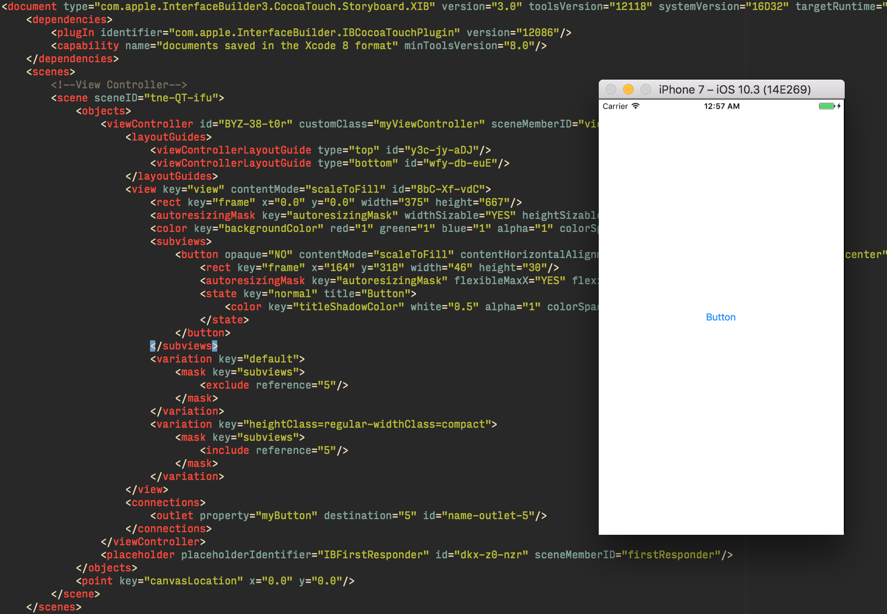
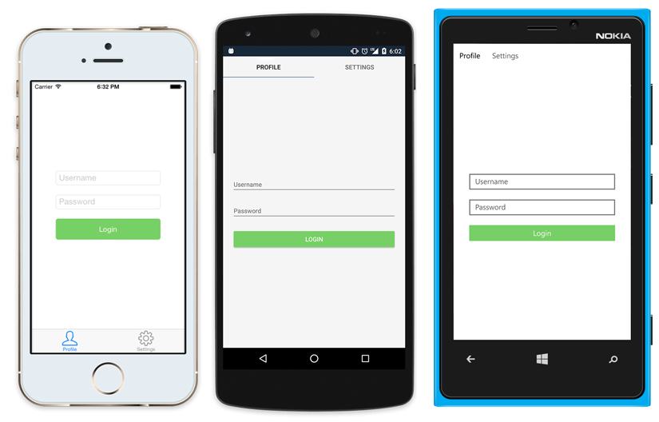
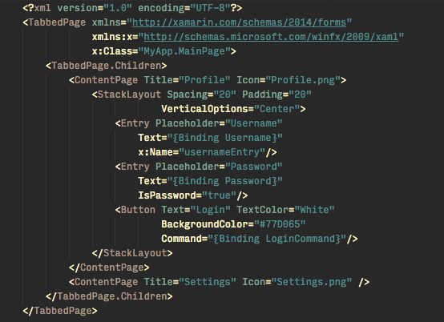
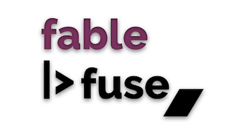
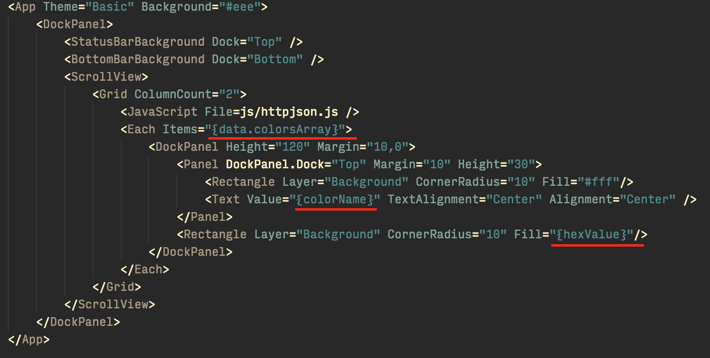

Multiple items
type ViewController =
inherit obj
new : handle:'a -> ViewController
override ViewDidLoad : unit -> 'a
member myButton : 'a
member myButton : 'a with set
Full name: index.ViewController
--------------------
new : handle:'a -> ViewController
type ViewController =
inherit obj
new : handle:'a -> ViewController
override ViewDidLoad : unit -> 'a
member myButton : 'a
member myButton : 'a with set
Full name: index.ViewController
--------------------
new : handle:'a -> ViewController
val handle : 'a
member ViewController.myButton : 'a with set
Full name: index.ViewController.myButton
Full name: index.ViewController.myButton
module Unchecked
from Microsoft.FSharp.Core.Operators
from Microsoft.FSharp.Core.Operators
val defaultof<'T> : 'T
Full name: Microsoft.FSharp.Core.Operators.Unchecked.defaultof
Full name: Microsoft.FSharp.Core.Operators.Unchecked.defaultof
val set : elements:seq<'T> -> Set<'T> (requires comparison)
Full name: Microsoft.FSharp.Core.ExtraTopLevelOperators.set
Full name: Microsoft.FSharp.Core.ExtraTopLevelOperators.set
override ViewController.ViewDidLoad : unit -> 'a
Full name: index.ViewController.ViewDidLoad
Full name: index.ViewController.ViewDidLoad
type VCContainer = obj
Full name: index.VCContainer
Full name: index.VCContainer
Multiple items
type myViewController =
inherit obj
new : ptr:'a -> myViewController
Full name: index.myViewController
--------------------
new : ptr:'a -> myViewController
type myViewController =
inherit obj
new : ptr:'a -> myViewController
Full name: index.myViewController
--------------------
new : ptr:'a -> myViewController
val ptr : 'a
val profilePage : obj
Full name: index.profilePage
Full name: index.profilePage
val settingsPage : obj
Full name: index.settingsPage
Full name: index.settingsPage
val mainPage : obj
Full name: index.mainPage
Full name: index.mainPage
Multiple items
type App =
inherit obj
new : unit -> App
Full name: index.App
--------------------
new : unit -> App
type App =
inherit obj
new : unit -> App
Full name: index.App
--------------------
new : unit -> App
Multiple items
type MainPage =
inherit obj
new : unit -> MainPage
Full name: index.MainPage
--------------------
new : unit -> MainPage
type MainPage =
inherit obj
new : unit -> MainPage
Full name: index.MainPage
--------------------
new : unit -> MainPage
val self : MainPage
val typeof<'T> : System.Type
Full name: Microsoft.FSharp.Core.Operators.typeof
Full name: Microsoft.FSharp.Core.Operators.typeof
val ignore : value:'T -> unit
Full name: Microsoft.FSharp.Core.Operators.ignore
Full name: Microsoft.FSharp.Core.Operators.ignore
namespace Microsoft.FSharp.Core
val data : obj
Full name: index.data
Full name: index.data
module Observable
from Microsoft.FSharp.Control
from Microsoft.FSharp.Control
val result : obj
Full name: index.result
Full name: index.result
val button : obj
Full name: index.button
Full name: index.button
val log : value:'T -> 'T (requires member Log)
Full name: Microsoft.FSharp.Core.Operators.log
Full name: Microsoft.FSharp.Core.Operators.log
val image : obj list
Full name: index.image
Full name: index.image
The expanding horizons of F# mobile development
Dave Thomas
#fsharpX | #fsharp
What are my options?
Xamarin
Xamarin native
- Xamarin iOS
- Xamarin Android
Xamarin Forms
- Cross platform
- shared UI
- Aimed at simple user interfaces
Xamarin iOS
- 100% API coverage
- Interface builder
Platforms
- iPhone
- Watch OS
- TvOs
- Mac
iOS Example
1: 2: 3: 4: 5: 6: 7: 8: 9: 10: |
|
iOS Example

Is there a better way to do this?
Yes!
Introducing The iOS designer provider
- Generative type provider approach
- code behind that is actually behind the scenes
- Outlets are exposed for use and not stringly typed
- Code completion and tooltips available
- Code is injected into the final assembly
- No clutter
- Less code
Example

Example
1: 2: 3: 4: 5: |
|
Generated Code

Xamarin Android
- 100% API coverage
- Interface builder
Platforms
- Android Phone
- Android Wear
Xamarin Forms
Build native UI's for iOS, Android and Windows phone from a single, shared codebase
- Cross platform
- shared UI
- Aimed at simple user interfaces
- Create user interface in Xaml or programatically
Xamarin Forms Example

Xamarin Forms Programmatic Example
1: 2: 3: 4: 5: 6: 7: 8: 9: 10: 11: 12: 13: 14: 15: 16: 17: 18: |
|
Xamarin Forms Xaml Example

Xamarin Forms Code Behind Example
1: 2: 3: 4: 5: 6: 7: |
|
So how do I choose?
Use Xamarin Forms when...
- UI is relatively simple
- Requires little platform specific functionality
- Code sharing is more important than UI
- Comfortable with XAML or programmatic construction
Use Xamarin Native when...
- A complex UI is required
- Interactions require native behavior
- You want to use many platform-specific API's or features
- The UI is more important than code sharing
Fable
What is Fable?
- Fable compiles F# to JavaScript
- Combines the power of F# with the pervasiveness of JavaScript
- Allows an opportunity to use the expressiveness and power of F# on new platforms
- Integrates with Existing JavaScript libraries
- Support most of Fsharp.Core and a some of the BCL
- Allows dynamic programming for fast turn around
- Can provide strongly typed foreign interfaces

What is Fable |> Fuse?
Fuse is a set of tools that makes designing and developing native mobile apps fast, easy and fun
- Fable generates JavaScript from F#
- User interface designed in an Xml dialect called UX
- Business logic defined in reactive JavaScript
- Code is compiled natively via C++
Fable |> Fuse Example

UX markup

JavaScript
1: 2: 3: 4: 5: 6: 7: 8: 9: 10: 11: |
|
Json based data
1: 2: 3: 4: 5: 6: 7: 8: 9: 10: 11: 12: 13: 14: 15: |
|
F#
1: 2: 3: 4: 5: 6: 7: 8: 9: 10: 11: |
|
F#

Fable |> Fuse
Pros
- Hot reloading
- Declarative UI
- x-plat
Fable |> Fuse
Cons
- Bleeding edge
- Limited by the Fuse framework and UX markup
- Coverage not 100% for those parts native code required (Obj-C/Swift/Java.)
- Packaging with webpack can be perilous (here be dragons)
Fable + React Native
React Native lets you build mobile apps using JavaScript. It uses the same API as React, lets you compose a mobile UI from declarative components
Example
1: 2: 3: 4: 5: 6: 7: 8: 9: 10: 11: 12: 13: 14: 15: 16: 17: 18: 19: 20: |
|
Fable + React Native
Pros
- Hot reloading
- Declarative UI
- x-plat
Fable + React Native
Cons
- Bleeding edge
- JavaScript oriented logic, efficiency, threading
- Limited by the react framework
- Run time only type checking
- Tricky debugging Chrome / (gdb, lldb)
- API coverage not 100%
- Packaging with webpack can be perilous (here be dragons)
How are Fuse and React Native different?
- Fuse aimed at designers and developers
- Fuse has an OpenGL based UI, intuitive and slick user experience
- Fuse has real-time editing of UX markup, real-time updating of UX code from Inspector
- React Native hosts more code in JavaScript like UI manipulation, virtual dom and serialization
- React Native has a lot more components available for initial use
Bringing it all together
Xamarin
- 100% Native API coverage
- Well supported platform
- x-platform option available with Xamarin Forms
- Compiles to native code
- Same day availability for new API's
- Easier debugging
Bringing it all together
Fable
- Hot coding on Fuse and React Native
- API coverage is not yet 100%
- Bleeding edge, be prepared to go deep
- Dependent on JavaScript compilation from F#
- Support may vary
Colophon Xamarin
- Look out for blog post on iOS designer provider
Colophon Fable
G͕̬AME͇͖̘̟̞̱ O͖̹̪V̥E̝R̦̘̝̝̻̜
#fsharpX | #fsharp